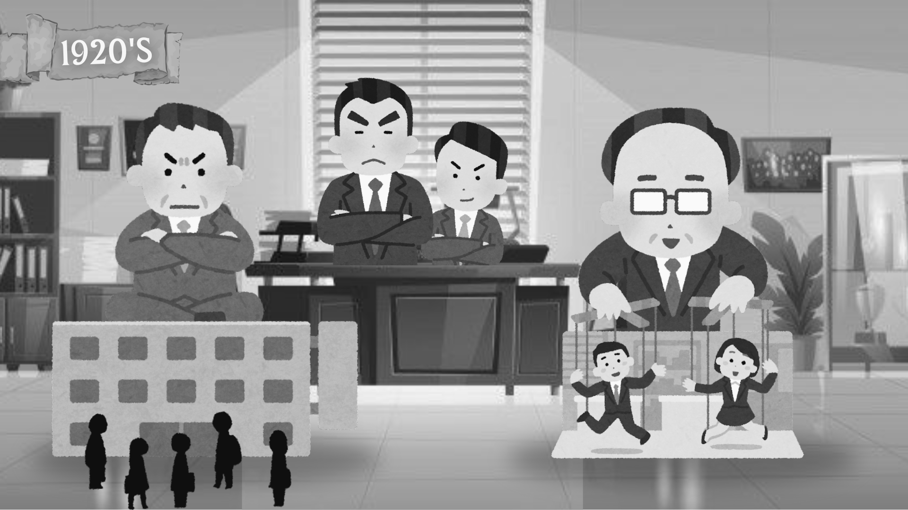

Situação 3:

Em uma organização, os gestores que seguem a administração tradicional adotam um estilo de liderança autoritário, onde as decisões são tomadas apenas pelos superiores hierárquicos, sem consulta aos colaboradores. Isso tem gerado desmotivação e um ambiente de trabalho desgastante. Qual seria a melhor proposta para melhorar isso?
ㅤㅤㅤㅤ